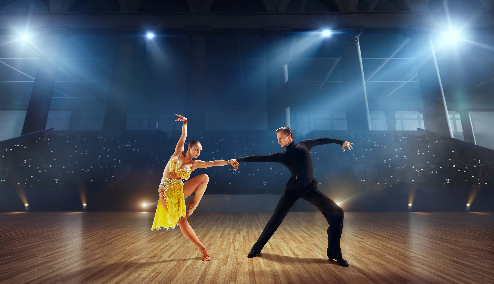
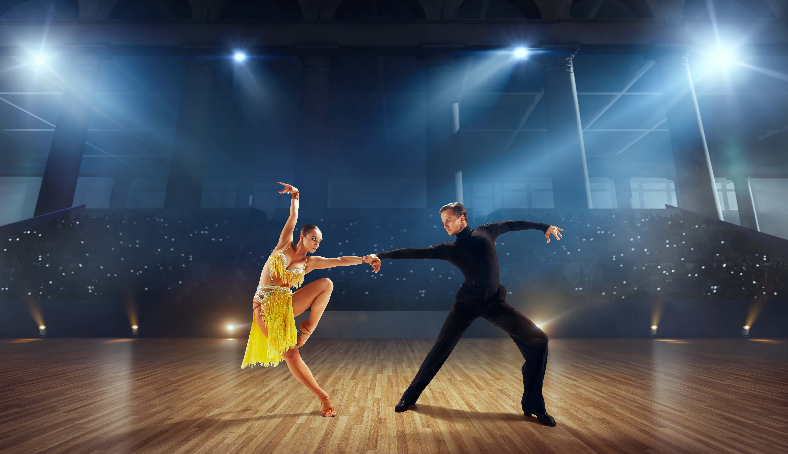

MOVE, GROOVE, HIP-HOP!
Hip-hop dance is an exhilarating form of expression that combines intricate footwork, powerful movements, and vibrant energy. Rooted in urban culture, it transcends traditional boundaries, enabling dancers to tell their stories through movement. Whether you’re breaking, locking, or popping, each style brings its own unique flair, inviting dancers of all levels to unleash their creativity. At our studio, we celebrate the spirit of hip-hop by fostering a supportive community where you can learn, grow, and connect with others who share your passion. Join us on this rhythmic journey and explore the art of hip-hop dance—where every step is a testament to authenticity and self-expression!
PRACTICE UNTIL YOU CAN'T GET IT WRONG, BALLET!
Ballet is a timeless art form that combines athleticism, grace, and artistry to create a mesmerizing storytelling experience. With roots that trace back to the Renaissance courts of Italy and France, ballet has evolved into a universal language of expression, celebrating the beauty of human movement. Each performance is a journey, where dancers transport audiences to fantastical worlds, evoke deep emotions, and convey narratives through their meticulous choreography. Whether performed on grand stages or in intimate settings, ballet continues to inspire and captivate, making it a cherished passion for both dancers and audiences alike.
LACE YOUR DANCING SHOE!
Modern dance is an expressive and dynamic art form that transcends traditional boundaries, marrying the emotional power of movement with innovative choreography. Embracing individuality and creativity, modern dance invites dancers to explore their personal narratives through fluid, spontaneous, and sometimes abstract physical expression. Unlike classical styles, which often adhere to strict techniques, modern dance encourages freedom in movement, allowing performers to communicate their innermost feelings and thoughts. Whether it's through powerful leaps, intricate floor work, or improvisational sequences, modern dance captivates audiences and breaks down the walls between performer and spectator. Join us as we celebrate the beauty and diversity of this vibrant art form, where every performance is a unique journey of expression, exploration, and connection.
MOVE YOUR HIPS AND THE REST WILL FOLLOW!
Immerse yourself in the enchanting world of belly dance, a timeless art form that celebrates femininity, movement, and cultural heritage. With its captivating rhythms and fluid movements, belly dance invites you to connect deeply with your body, expressing emotions through intricate hip accents and graceful undulations. Whether you're a seasoned dancer or a complete beginner, our classes offer a welcoming space for personal growth and creativity. Experience the joy of self-expression, unleash your inner goddess, and join a vibrant community of dancers who share your passion for this mesmerizing dance style. Let the music guide you, and discover the beauty of belly dance!
DISCOVER THE ART OF BALLROOM DANCE!
Step into the enchanting world of ballroom dance, where elegance meets rhythm on the dance floor. Whether you're a novice eager to learn the basic steps or an experienced dancer looking to refine your technique, our ballroom dance classes cater to all skill levels. Experience the joy of gliding across the floor, embracing the beauty of connection and expression with your partner. Join us to foster your love for dance, improve your confidence, and form new friendships, all while enjoying the music that moves your soul. Dance with us and let your spirit soar!
DISCOVER THE RHTYHM OF MOVEMENT!
At Our Dance Workshop, contemporary dance is more than just a form of expression; it’s a journey that transcends the boundaries of tradition and innovation. Join us as we embrace vulnerability, connect with our audience, and celebrate the beauty of movement in all its forms. Whether you’re a seasoned dancer or a curious observer, we invite you to experience the transformative power of contemporary dance—it’s where artistry meets authenticity.